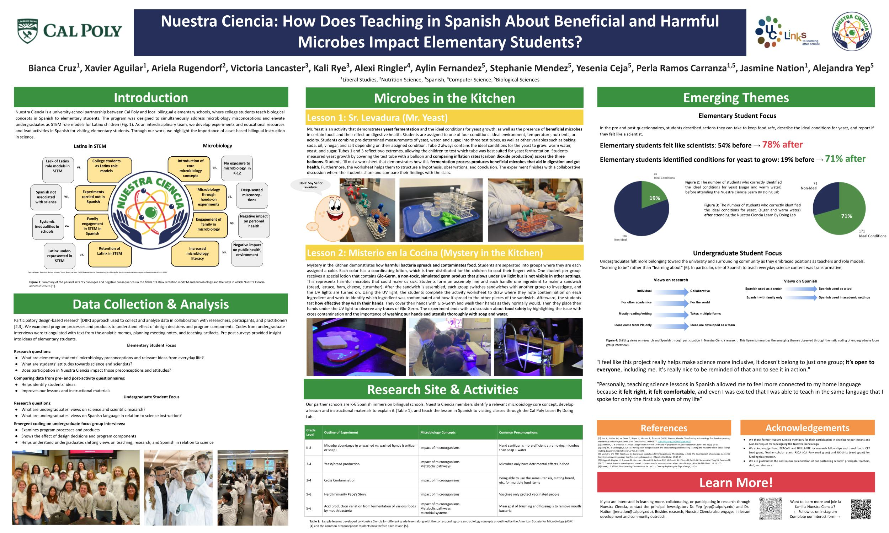
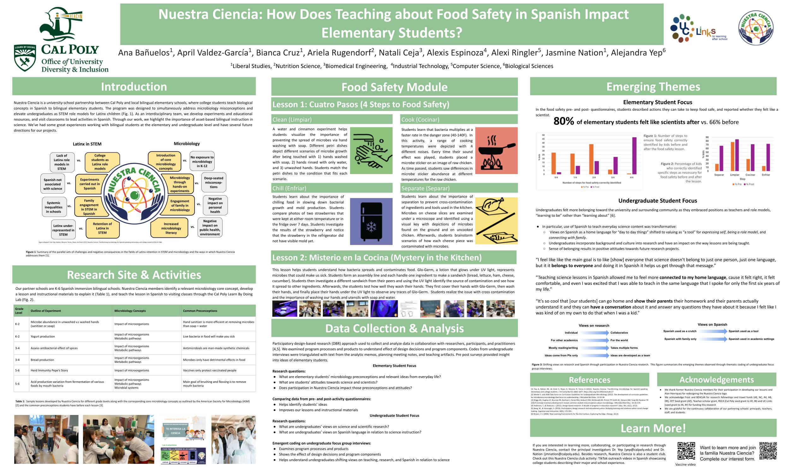

Research
Nuestra Ciencia’s research asks big questions about identity, language, and science learning. Our work centers community voices and challenges traditional ideas of who belongs in science.
Elementary Focus
Our research with elementary students centers around how they engage with microbiology concepts and view themselves in relation to science. We use a participatory design-based research (DBR) approach to collect data through pre- and post-lesson questionnaires. These help us identify students’ ideas, inform lesson improvements, and track shifts in science understanding. By comparing responses before and after each activity, we can see how students grow — both in knowledge and in their sense of belonging in science spaces. We ask:
- What are elementary students’ microbiology preconceptions and relevant ideas from everyday life?
- What are students’ attitudes towards science and scientists?
- Does participation in Nuestra Ciencia impact those preconceptions and attitudes?
Undergraduate Focus
Nuestra Ciencia also explores how teaching science in Spanish impacts our undergraduate mentors. Using focus group interviews, we apply emergent coding to analyze their experiences and reflections. These insights are triangulated with memos, lesson planning notes, and teaching artifacts to understand the deeper effects of the program. This research helps us explore how undergrads’ perspectives shift as they take on roles as bilingual educators, researchers, and role models — and how Nuestra Ciencia empowers them to connect their cultural and academic identities. We ask:
- What are undergraduates’ views on science and scientific research?
- What are undergraduates’ views on Spanish language in relation to science instruction?
- Does participation in Nuestra Ciencia impact those preconceptions and attitudes?
2025 Bailey College Of Science and Math (BCSM) Conference Poster
2024 BCSM Conference Poster
